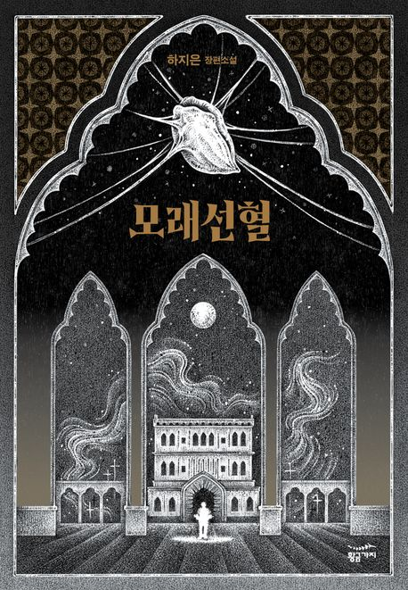
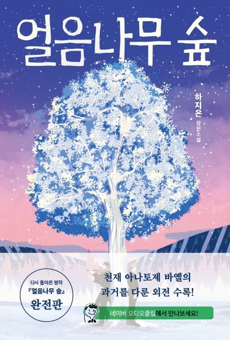

THINKING
& RECORDING.
텍스트를 통해 세상을 읽고 일렬로 기록해 나가는 장수희의 아카이브 사이트입니다.
가장 기억에 남는 책들
안녕하세요. 평소에 책 읽는 걸 좋아하는 장수희입니다.
이번에는 제가 그동안 살면서 특히 더 재밌게 읽었던 책들을 몇 권 소개해 보려고 합니다.
어릴 때부터 거창한 취미는 없었지만, 책 읽는 걸 좋아했습니다.
두꺼운 책 속에 담긴 다양한 이야기들을 읽다 보면 시간 가는 줄도 모르고 푹 빠져들게 되더라고요.
남들이 꼭 읽어야 한다고 말하는 필독서보다는, 그냥 제 눈에 밟혀서 무심코 집어 들었다가 밤을 새워 읽게 만든 그런 책들이
저에게는 훨씬 더 소중하고 기억에 오래 남았습니다.
그래서 이번 아카이브에는 제가 정말 페이지 줄어드는 게 아까울 정도로 몰입해서 읽었던 세 권의 책,
『멋진 신세계』와
『동물농장』, 그리고
『소년이 온다』을 가져왔습니다.
스토리가 진짜 탄탄하고 재미있어서 다른 사람들에게도 꼭 한 번쯤 소개해 주고 싶었던 책들입니다.
책을 읽으면서 혼자 끄적였던 짧은 생각들과 유독 마음에 와닿았던 멋진 문장들을 저만의 방식으로 꼼꼼하게 정리해 두었습니다.
멋진 신세계 올더스 헉슬리 (Aldous Huxley)
[ 작품 줄거리 및 핵심 요약 ]
이 작품은 과학 기술의 극단적인 발전이 가져온 디스토피아적 미래 사회를 배경으로 합니다. 모든 인간은 병 속에서 대량 생산되며, 태어날 때부터 계급이 결정되고, 감정과 고통을 통제하는 알약인 '소마(Soma)'를 통해 강제적인 행복을 주입받습니다. 이 완벽하고 안정된 시스템 속에 던져진 야만인 '존'은 고통과 노화, 슬픔이 부재한 삶이 얼마나 기만적인지를 깨닫고 자유를 요구합니다.
늙고 추악해지고 성 불능이 되는 권리와 매독과 암에 시달리는 권리와 먹을 것이 너무 없어서 고생하는 권리와 이 투성이가 되는 권리와 내일은 어떻게 될지 끊임없이 걱정하면서 살아갈 권리와 장티푸스를 앓을 권리와 온갖 종류의 형언할 수 없는 고통으로 괴로워할 권리는 물론이겠고요.
나는 그런 것들을 모두 요구합니다.
- 본문 중에서, 자유를 원하는 야만인 '존'의 대사
[ 후기 ]
올더스 헉슬리가 그려낸 디스토피아는 그 당시에 쓰였다고는 믿기지 않을 정도로 정교하고 날카롭습니다. 인공 부화기에서 태어날 때부터 철저하게 결정되는 계급제, 그에 따른 강제적인 노동과 정해진 직업, 그리고 통제된 자유까지. 이 책은 처음 읽었을 당시 저에게 그야말로 신선한 충격을 주었습니다.
처음에는 개인의 자유를 완전히 박탈하고 직업을 강제로 정해버리는 시스템에 반발심이 생겼습니다. 인간으로서 당연히 누려야 할 자유의지가 억압되는 것은 명백히 옳지 않다고 생각했기 때문입니다. 하지만 나이가 들고 현실에 부딪히며 미래와 직업에 대한 고민이 깊어지다 보니, 문득 직업이 정해져 있었다면 좋지 않았을까 하는 묘한 생각이 스치기도 했습니다.
이러한 생각의 변화를 겪고 나니, 현대 사회의 디스토피아는 바로 이런 모습이 아닐까 싶었습니다. 고통도, 고민도, 불안도 없는 겉보기에 완벽한 유토피아 같아서, 자유를 갈망하는 현대인들조차 때로는 모순적으로 그런 안정된 통제를 바라게 된다는 점이 참 아이러니합니다. 결말에서 존이 자살하게 되는 점까지 많은 생각을 하게 해주는 책입니다.
동물농장 조지 오웰 (George Orwell)
[ 작품 줄거리 및 핵심 요약 ]
인간 주인의 착취에 맞서 혁명을 일으킨 메이너 농장의 동물들은 자신들만의 평등한 유토피아인 '동물농장'을 건설합니다. 그러나 혁명을 주도했던 돼지 계급의 '나폴레옹'은 점차 권력의 맛을 보며 타락하기 시작합니다. 그들은 동물들을 기만하고 규칙을 자신들에게 유리하게 교묘히 수정하며, 결국 쫓아냈던 인간들과 다를 바 없는 잔혹한 독재자로 변모해 갑니다.
- 권력을 잡은 돼지들이 기존의 평등 원칙을 왜곡하여 벽에 새로 써 붙인 기만적인 슬로건
[ 후기 ]
『동물농장』은 제가 지금까지 읽어본 풍자 소설 중 가장 깊은 여운이 남는 작품입니다. 작중에서 동물들이 혁명을 일으키는 과정부터, 지배 계급이 된 돼지들이 결국 권력에 심취해 타락해 가는 모습까지의 흐름이 실제 역사를 고스란히 옮겨 놓은 듯해 마치 한 편의 역사서를 읽는 듯한 느낌을 받았습니다. 조지 오웰은 실제 역사 속 인물들과 전체주의 체제의 모순을 직접적인 단어를 쓰지 않고도 동물들의 관계를 통해 놀라울 정도로 정교하고 날카롭게 묘사해 냅니다.
권력이 어떻게 언어를 조작하고 대중을 기만하는지 그 메커니즘을 너무나 사실적으로 서술하고 있어 읽는 내내 감탄하게 됩니다. 특히 소설의 마지막 장에서 권력을 잡은 돼지들이 결국 자신들이 쫓아냈던 인간들과 전혀 구별되지 않는 모습으로 변해버리는 결말은 대단히 인상 깊었습니다. 혁명의 순수한 이상이 독재와 특권층의 탄생으로 변질되는 비극을 보며, 권력에 대한 맹목적인 믿음이 얼마나 위험한지 깊이 생각해보게 만드는 최고의 고전입니다.
소년이 온다 한강 (Han Kang)
[ 작품 줄거리 및 핵심 요약 ]
1980년 5월, 광주에서 벌어진 참혹한 사건을 배경으로 한 이 소설은 여섯 명의 시점에서 서술되고 있습니다. 계엄군의 총칼 앞에 스러져간 이들의 영혼과 흔적을 쫓으며, 국가라는 거대한 폭력 앞에 무참히 짓밟히면서도 서로를 지키려 했던 평범한 사람들의 이야기를 여러 인물의 시선으로 밀도 높게 얘기해주는 작품입니다.
- 작중 계엄군으로 인해 죽은 사람의 장례를 치러주며 하는 서술
"당신이 죽은 뒤 장례식을 치르지 못해, 내 삶이 장례식이 되었습니다."
- 작중 연극 대사
"분수대에서 물이 나와서는 안된다고 생각합니다... 어떻게 벌써 분수대에서 물이 나옵니까. 무슨 축제라고 물이 나옵니까."
- 작중 번역가가 분수대에서 물이 나오는 걸 보고 항의하는 대사
[ 후기 ]
저는 그 당시를 찍은 동영상과 사진을 보면 아직도 눈물이 납니다. 한강 작가님은 당시 있었던 일을 담담한 문장으로 풀어나갑니다. 독자들은 슬픈데 정작 화자들은 끔찍한 이야기를 담담하게 풀어나가니 더욱 속상했습니다. 2장 화자가 왜 군인들이 우릴 쏜 건지에 대해 생각하는 것이 마음 아팠습니다 군인들의 총에 쓰러져 간 사람들은 자신들이 왜 죽은 것인지도 모르겠지요 한강 작가님도 채식주의자보다 소년이 온다를 더 읽어주었으면 좋겠다고 말씀하신 만큼, 가히 짐작이 가능한 작품이었습니다. 꼭 읽지 않아도 되니, 잊지는 말았으면 합니다.
읽는 내내 가슴이 먹먹하고 숨이 막힐 정도로 고통스러웠지만, 역설적이게도 이 이야기를 끝까지 읽어내는 것이야말로 우리가 그날의 희생자들에게 할 수 있는 최소한의 예의라는 생각이 들었습니다.
그저 많은 사람들의 희생으로 지금의 민주주의가 있다는 것만 알아줬으면 좋겠습니다.
MORE BOOKS IN SHELF
아직 긴 사유로 풀어내지 못했지만, 곁에 두고 끊임없이 들추어보는 서재 속 다른 조각들입니다.

모래선혈
하지은
사막을 배경으로 한 독립과 혁명의 서사시. 구원을 찾아 먼 이국으로 간 레아킨과 그곳에서 그를 만난 비오티의 이야기를 담은 소설이다.

얼음나무 숲
하지은
단 한 명의 청중을 갈구하는 천재 음악가와, 그의 유일한 이해자가 되고 싶었던 이의 갈등과 우정, 그리고 그들을 둘러싸고 벌어지는 불가사의한 사건들과 그곳에 감춰진 이야기를 담은 소설이다.

녹슨 달
하지은
아버지의 자살로 인해 화가가 되지 않기로 했으나 결국 화가의 길로 가게 된 파도 조르디. 동료 화가들에 대한 동경과 질시, 비정한 현실 속에서 어긋나버린 마음을 담은 소설이다.